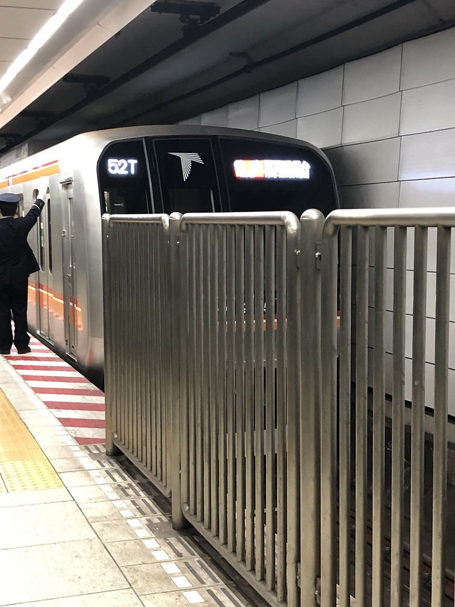

何故東葉高速線を使うのか
皆さんの中で東葉高速線の通学定期券を所持している方、とても多いと思います。東葉高速鉄道を使うメリットとしては、
- 船橋日大駅から大学が近い
- 東西線から東葉高速線に直通していて都心からアクセスできる
- 西船橋乗り換えで様々な所へ行ける
しかし、皆さんこの大学に通って3年目、あるいは日大習志野高校や千葉日本大学第一中学高等学校からこのあたりに通っている方は6年目、9年目なんて方も多いと思います。
そんなわけで、皆さん東葉高速線が高いことぐらい気付いてるはずです。なのに皆さんが東葉高速線に乗り続ける理由として上にあげたメリットが大きいと思うのです。
東葉高速線のデメリット
それでも僕は、東葉高速線のメリットとデメリットを天秤にかけて「やっぱり使うのやめようかな…」と考えています。そのデメリットはこちらです。
- 高い
- 電車が15分おきにしか来ない
- 寝過ごすと中野まで行ってしまう
- 中央線とリンクして遅延することが多い
- 土日祝日の朝快速運転してないから1限に遅刻する

目の前で発車する東葉高速線直通の東西線(大手町駅)